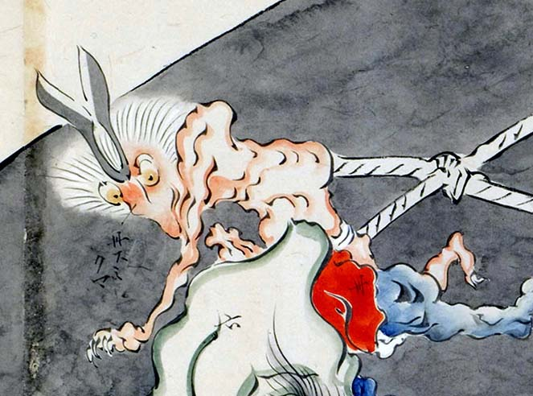

鋏の化物。体は橙色で、頭上には鋏をのせている。
著作者：玉水写／出典：親書誌：U426_nichibunken_0095：土佐光起百鬼夜行之圖；トサミツオキヒャッキヤギョウノズ／日付：2007／資源識別子：U426_nichibunken_0095_0046_0000
Copyright (c)2010- International Research Center for Japanese Studies, Kyoto, Japan. All rights reserved.